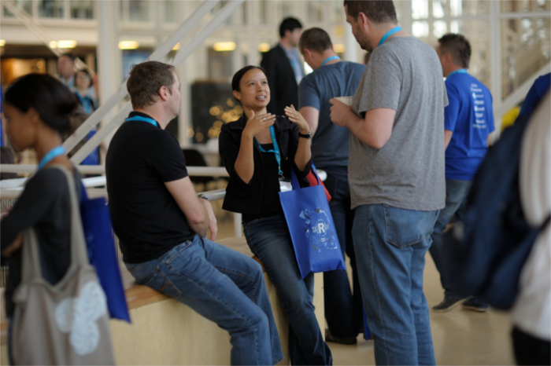
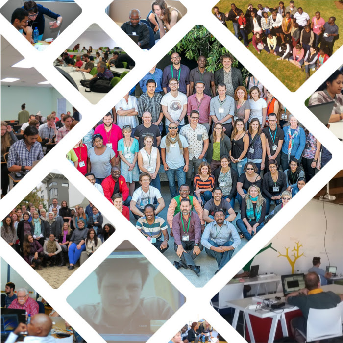
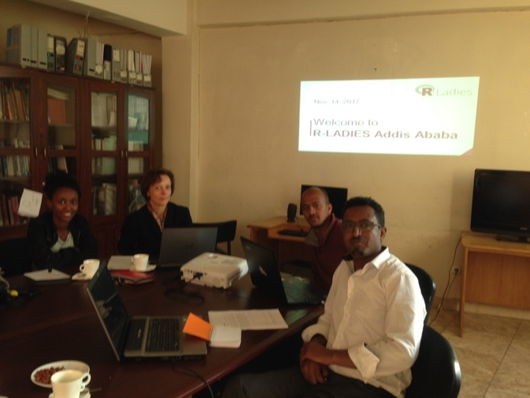
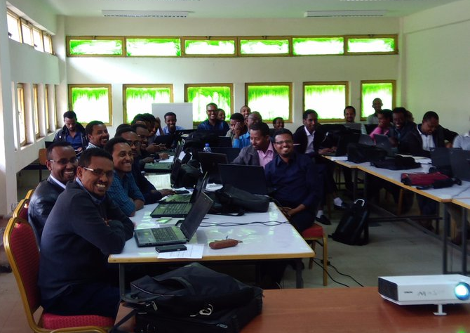

R in Africa
R is used around the world and yet, in English-speaking media at least, we tend to hear most about what is happening in North America, Europe, and Australasia. So we would like to highlight some recent initiatives in the R community from other regions of the world, with this first post in the series focusing on R in Africa.
satRdays in Cape Town
Following the first successful satRday in Budapest on 3 September 2016, a satRday in Cape Town was held on 18 February 2017. The event was hosted at Workshop 17 in the Victoria & Alfred Waterfront. There were three great keynote speakers (Jenny Bryan, Julia Silge and Steph Locke). In addition to the invited speakers the organizers received 41 contributed proposals, of which 23 were accepted: 3 tutorials, 8 standard talks and 12 lightning talks. Just over 200 tickets were issued for the event and the venue was literally packed. On two days prior to the conference there were workshops by the keynote speakers. These were also very well attended.

satRday was an excellent networking opportunity!
A second satRday in Cape Town is now planned for 17 March 2018, with two exciting keynote speakers: Maëlle Salmon and Stephanie Kovalchik. They will be presenting workshops on R package development and sports analytics with R on the day prior to the conference.
Next year’s conference will be held at a bigger venue on the campus of the University of Cape Town, which will be able to accommodate even more enthusiastic R users. Tickets are on sale and the Call for Papers is open.
Software/Data Carpentry
Since 2015 Software Carpentry and Data Carpentry have been enabling R capacity development in Africa. Software and Data Carpentry host two-day workshops teaching researchers and postgraduate students foundational skills to assist with better research software development and data analysis respectively. The Carpentries are global non-profit volunteer organisations that not only teach tools like R, Python, SQL, and git/Github, but also run a two-day instructor training workshop to help technical experts teach more effectively.

Highlights from Carpentry workshops
Over the past three years more than 30 workshops were run in countries like South Africa, Mauritius, Ghana, Gabon, Namibia, Botswana, Kenya, and Ethiopia. These workshops have reached hundreds of researchers and students who mostly had limited or no prior exposure to programming.
More information about the lessons we teach is available at the websites: Software Carpentry and Data Carpentry.
If you’d like to get involved in Carpentries in Africa, please join our Google Group or request a workshop by completing the form.
R-Ladies in Africa
The set-up of a Cape Town chapter of R-Ladies was inspired by the first satRday conference in Cape Town. All three plenary speakers at that conference were part of the R-Ladies community and it was extremely refreshing to go to a conference largely about science and technology where women took the centre stage. Cape Town is a multicultural, multilingual and multiracial city, but this diversity is not represented in the R user community. The aim of the Cape Town chapter of R-Ladies is to grow the female R user community in Cape Town and bring to it the diversity of cultures, ethnicities and backgrounds present in the city. By the end of 2017 the group will have had five meetups since their launch in July this year. They are still quite a small group, but they are confident they will grow in time. One might expect that there would be many more people using R in a big city, but issues with congestion and public transport may form a barrier to people attending. The answer might be to form even more R-Ladies chapters around different parts of the city so that people don’t have to travel far! R-Ladies Cape Town can be reached at capetown@rladies.org and on Twitter @RLadiesCapeTown.
R Ladies Addis was founded on October 30, 2017 in the course of the 2nd Data Carpentry Workshop in Addis Ababa, with 7 founding members and 2 honorary members. Thanks to the support provided by Ms. Anelda van der Walt from South Africa, an honorary member of R Ladies Addis as well as the R Ladies community, R Ladies Addis got ready for its first meeting on November 14, 2017. The agenda of this meeting was to decide the framework of R Ladies Addis activities. The group has set its special focus on working with women students and women researchers by offering R training and R competitions. R Ladies Addis has been invited to reach out to the different corners of Ethiopia. For the time being R Ladies is present at https://r-ladies-addis.github.io/studyGroup and can be reached by e-mail addisababa@rladies.org.

1st Meeting of R Ladies Addis on Nov. 14, 2017
A new chapter of R-Ladies will soon be starting in Cotonou, Benin. The organizers plan to have their first meeting in January to conincide with the start of the new academic year. Follow the group on Twitter, @RLadiesCtn or email cotonou@rladies.org to find out more! Local R-Ladies also hope to establish groups in Fez, Morocco and Johannesburg, South Africa; if you are interested in these groups, or interested in starting a chapter in your own area (in Africa or beyond!) you can contact info@rladies.org.
>eR-Biostat: making R based education materials accessible for all
One of the main problems in education at both undergraduate and master’s levels in developing countries is the lack of high quality materials for courses in education programs. The >eR-Biostat initiative is focused on providing R-based materials for higher education programs in Biostatistics/Statistics, as well as introductory materials for non-statisticians and in future, an E-learning system for courses at different education levels.
Courses are organized in four clusters and are ready to be delivered in class. The Introductory courses aim to train students in data analysis using R at a basic level. These courses were developed for undergraduate students, both non-statisticians and statisticians. The courses within this cluster can also be used as courses to support R usage in undergraduate programs in biostatistics/statistics. The Basic courses are designed for an intermediate level and a basic knowledge in statistics is required in order to follow the courses. The courses within this cluster can be used as training courses for non-statisticians and as courses to support R usage in undergraduate programs in biostatistics/statistics. The Statistical modelling (I) and Statistical modelling (II) clusters consist of basic and advanced courses, respectively, at master’s level in biostatistics/statistics.

The first >eR-Biostat workshop in Gondar University, Ethiopia
Course materials and updated information about our activities are available online (See >eR-BioStat).
Follow us on Facebook and Twitter (@erbiostat). Interested to contribute a course and/or an >eR-Biostat event? Send an email to erbiostat@gmail.com or ziv.shkedy@uhasselt.be.
Other activities
Here we have focused on some of the more recent initiatives, but of course there are many other groups encouraging the use of R in Africa. For example, several general R User Groups have been established; many are listed on the Data Science Africa web site and a few more are listed on the R User Groups listing hosted by jumping rivers. On the education side, the centres of the African Institute of Mathematical Sciences (AIMS) often use R in their courses and workshops. In particular AIMS Tanzania is a partner in the Africa Data Initiative that developed R-Instat a front-end to R designed to make R more accessible for students. Going beyond the classroom, BeST (Bespoke eStyle Statistical Training for Africa and South Asia) assist in upskilling scientists working in agricultural development via online courses in R. If you are aware of other such initiatives, feel free to share them in the comments!